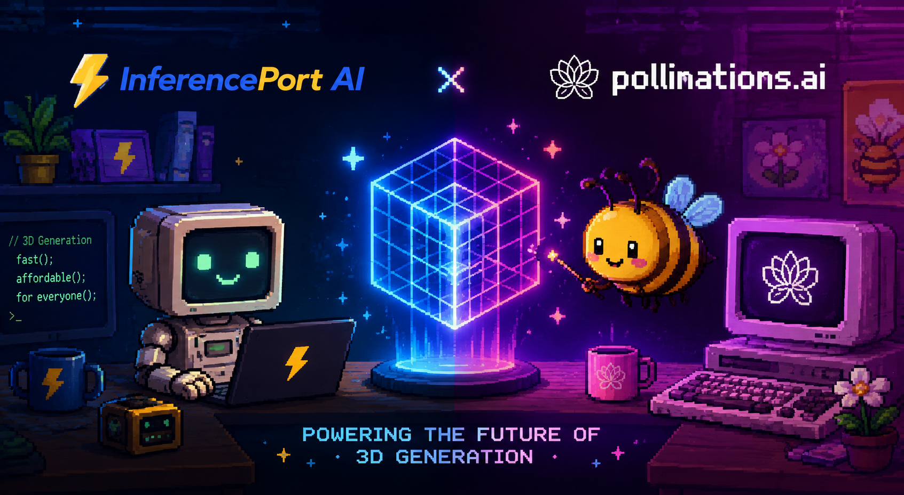

We're teaming up to bring fast, affordable 3D generation to everyone. Create stunning 3D models directly from text prompts — no GPU required.
Pollinations.ai has become one of the fastest‑growing open‑source AI ecosystems for developers, creators, researchers, and makers. Rather than locking users into a single model or provider, Pollinations provides a unified API for text, images, audio, video, vision, embeddings, search and more — allowing developers to build AI applications without worrying about infrastructure or model management. The platform now powers hundreds of community‑built applications and processes millions of AI requests every day, all while remaining committed to openness and developer‑first innovation.
That philosophy aligns perfectly with InferencePort AI. Our mission has always been to make advanced AI capabilities accessible without expensive hardware or complicated deployments. By integrating InferencePort's optimized inference pipeline with Pollinations' open AI platform, we're extending that vision into high‑performance 3D generation.
Traditional 3D workflows often require powerful GPUs, complex software, and hours of rendering. InferencePort AI changes that. Our optimized backend enables users to generate detailed 3D assets from simple text prompts in seconds. Whether you're prototyping a game, building a virtual world, creating educational content, or experimenting with generative design, you'll spend less time waiting and more time creating.
Pollinations isn't just another AI API — it's a community. Developers can experiment with state‑of‑the‑art models, contribute to open‑source projects, integrate AI using OpenAI‑compatible APIs, and even build applications that allow users to bring their own usage credits. Its transparent development process, public roadmap, and active contributor ecosystem make it one of the most exciting places to build modern AI software. With InferencePort AI joining the ecosystem, creators can now leverage that same openness for rapid 3D asset generation.
This collaboration is about more than integrating another feature. It's about combining Pollinations.ai's open AI ecosystem with InferencePort AI's specialized inference technology to expand what's possible for developers and creators. Together we're making advanced AI generation — including high‑quality 3D content — more accessible, more affordable, and dramatically easier to integrate into real‑world applications. Whether you're building the next AI‑powered game, designing immersive experiences, prototyping products, or simply exploring what's possible, this partnership gives you the tools to move from idea to creation faster than ever.
Everything you need to start generating 3D content today.
Get your 3D models generated in seconds, not hours. Optimized for speed without sacrificing quality.
No expensive hardware or subscriptions needed. Generate professional 3D models at a fraction of the traditional cost.
Access directly from your browser at enter.pollinations.ai. No installation, no setup — just start creating.